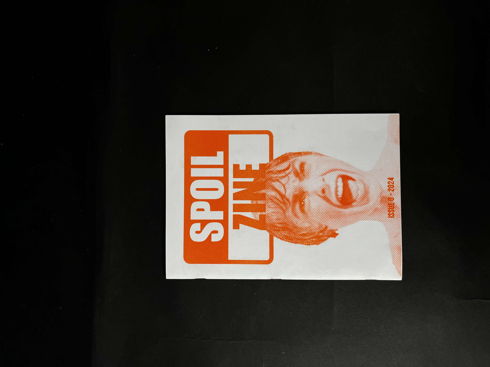
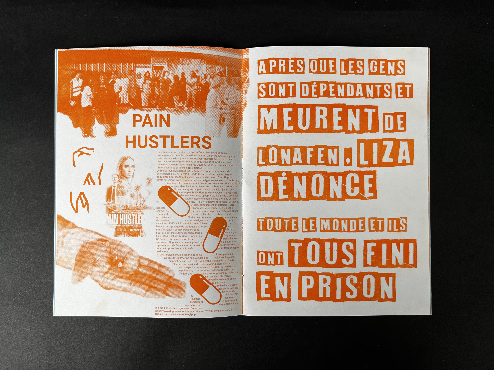
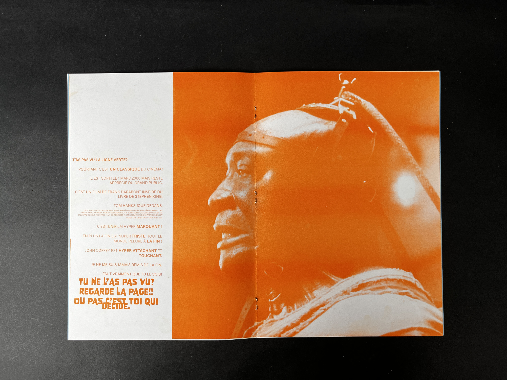
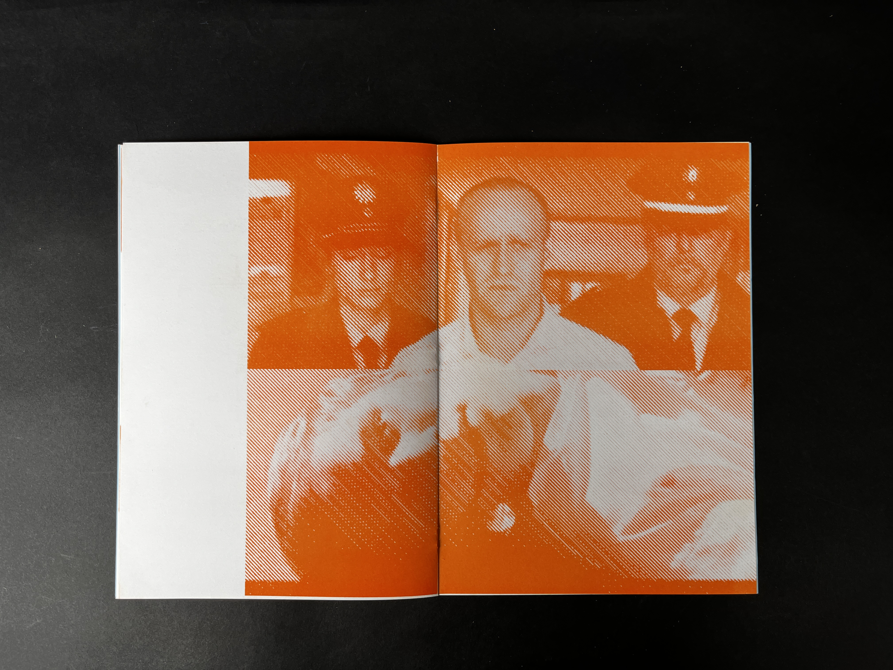
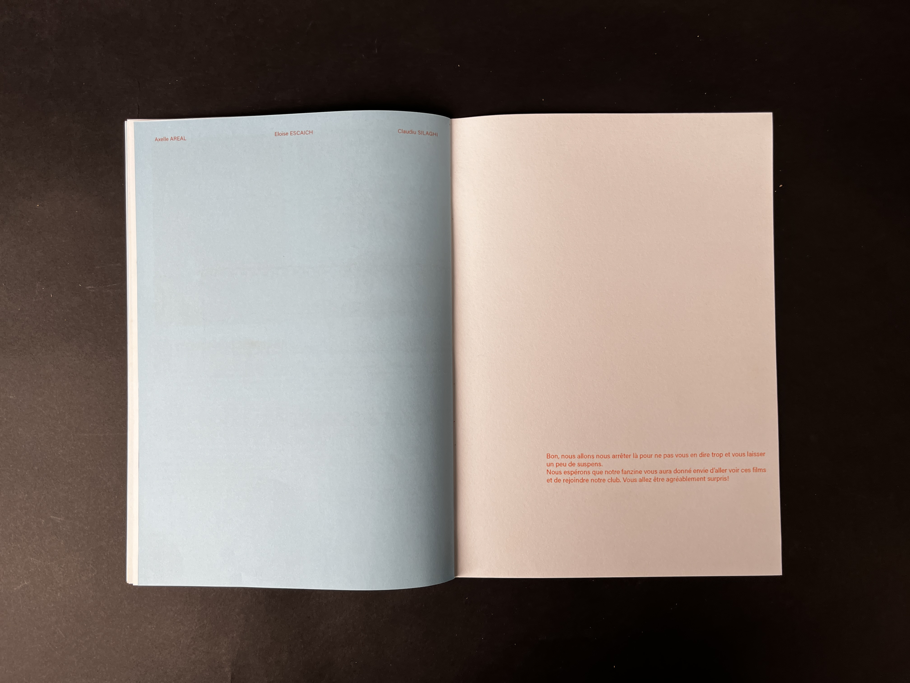
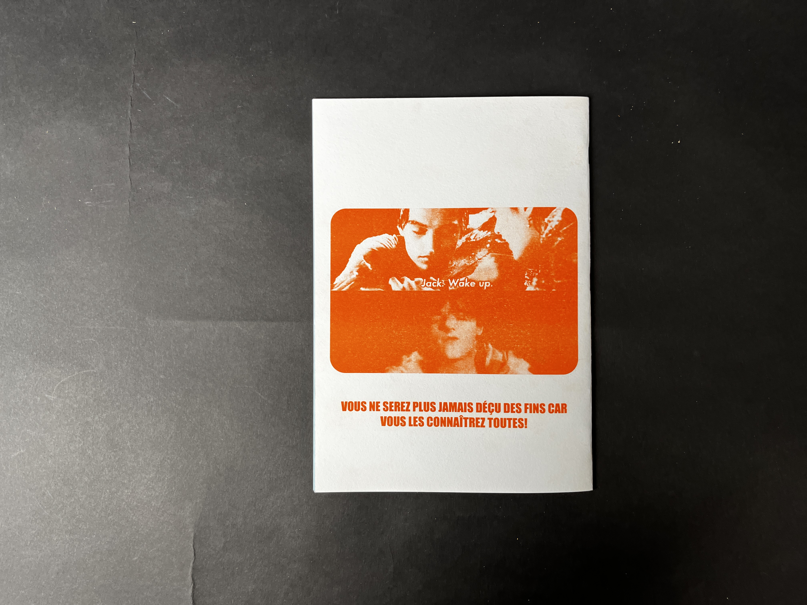
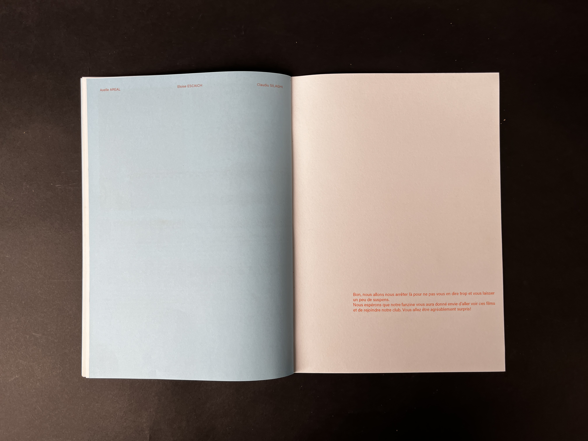
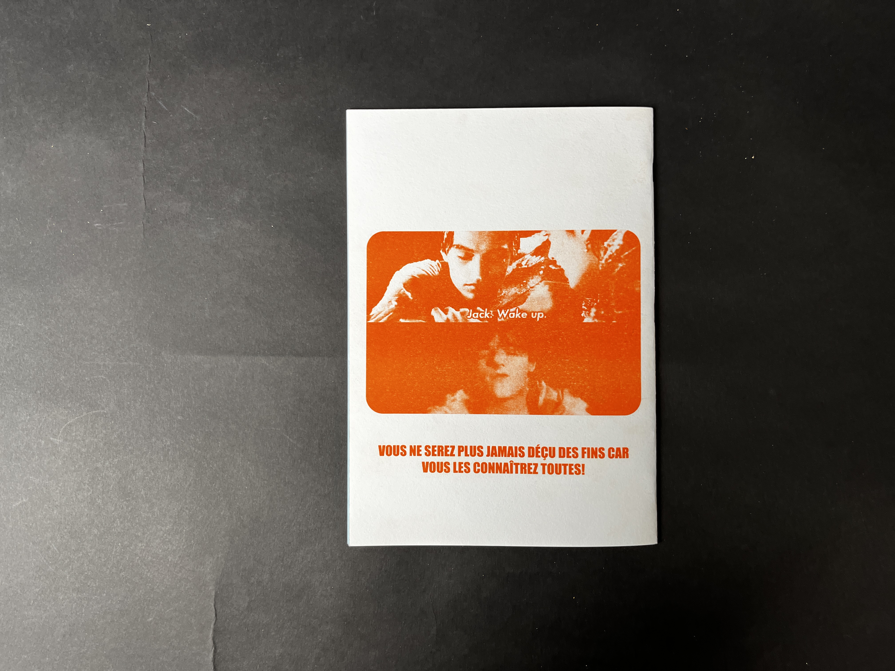
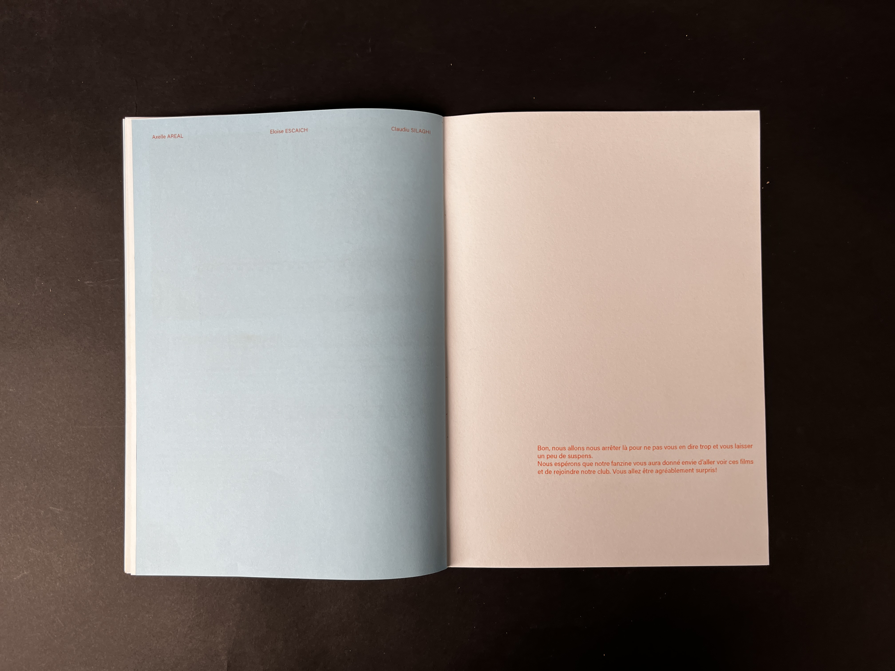
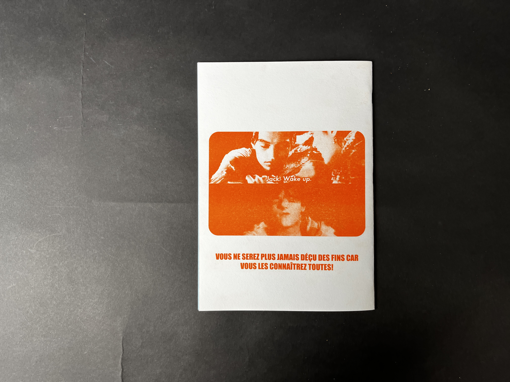

 





Pass'age
La demande était de concevoir un système d’identité visuelle pour une structure intergénérationnelle qui vise à créer du lien entre personnes âgées et jeunes enfants, via des ateliers. J’ai utilisé une typographie linéale, en jouant subtilement sur le lettrage pour créer une transition entre les lettres. Cela apporte une touche enfantine tout en restant assez sobre pour plaire à tous les publics. Les formes géométriques évoquent l’idée d’un jeu de construction symbolisant l’ensemble qui se déploie et se connecte.